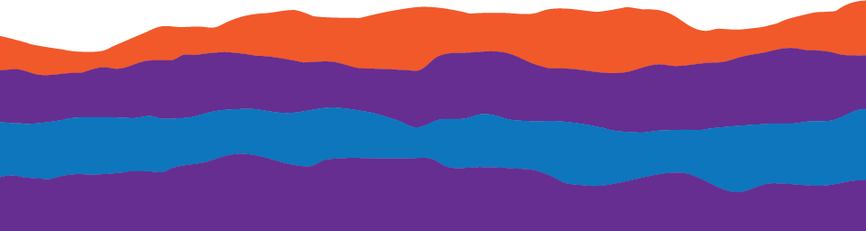

<!DOCTYPE html>
<html lang="ko">

<head>
    <meta charset="utf-8">
    <meta name="viewport" content="width=device-width, initial-scale=1.0, maximum-scale=1.0, minimum-scale=1.0">
    <title>파타고니아 서브페이지1</title>
    <link rel="stylesheet" href="../style/sub1Style.css">
    <link rel="stylesheet" media="all and (max-width: 1023px)" href="../style/sub1Tablet.css">
    <link rel="stylesheet" media="all and (max-width: 767px)" href="../style/sub1Mobile.css">

</head>

</html>

<body>

    <div class="top_bt">
        <a href="#" class="material-icons-outlined top">arrow_upward</a>
        <div class="material-icons-outlined darkmode"><span></span></div>
    </div>

    <header>
        <nav>
            <h1><a href="./index.html">
                    
                    
                </a></h1>
            <a class="m_menu_bt" href="#"><span>모바일 메뉴바</span></a>
            <div class="mgnb">
                <ul class="gnb clearfix">
                    <li><a href="./sub1.html">Brand</a>
                        <ul class="lnb1">
                            <li><a href="./sub1.html#sec1">브랜드 소개</a></li>
                            <li><a href="./sub1.html#sec2">브랜드 역사</a></li>
                            <li><a href="./sub1.html#sec3">뉴스레터</a></li>
                        </ul>
                    </li>
                    <li><a href="./sub2.html">Environment<br> Responsibility</a>
                        <ul class="lnb2">
                            <li><a href="./sub2.html#sec1">원단 및 기술</a></li>
                            <li><a href="./sub2.html#sec2">1% for the planet</a></li>
                            <li><a href="#">space</a></li>
                            <li><strong>official blog</strong></li>
                            <li><a href="#">the cleanest line</a></li>
                        </ul>
                    </li>
                    <li><a href="./sub3.html">Active</a>
                        <ul class="lnb4">
                            <li><a href="./sub3.html#sec1">스포츠</a></li>
                            <li><a href="./sub3.html#sec2">캠페인</a></li>
                            <li><a href="./sub3.html#sec3">worn wear</a></li>
                            <li><a href="#"><strong>tester reviews</strong></a></li>
                        </ul>
                    </li>
                </ul>
            </div>
            <a href="#" class="shop_bt">shop</a>
        </nav>
    </header>

    <nav class="subnav">
        <ul class="menu">
            <li><a href="#" id="sec1">브랜드 소개</a></li>
            <li><a href="#" id="sec2">브랜드 역사</a></li>
            <li><a href="#" id="sec3">뉴스레터</a></li>
        </ul>
    </nav>

    <section class="brand on sec1">
        <div class="sec1">
            <div class="inner_wrap clearfix">
                <h2>Our Reason<br> For<br> Being</h2>
                <div class="left"></div>
                <div class="right">
                    <h4>Patagonia is in business<br>
                        to save<br>
                        our home planet</h4>
                    <p class="sub_title">“우리는 우리의 터전, 지구를 되살리기 위해 사업을 합니다”</p>
                    <p> 파타고니아는 클라이밍, 서핑, 트레일러닝, 산악자전거, 스키-스노보드 관련 제품을 판매합니다. 이들 스포츠는 모두 엔진이 존재하지 않는 조용한 스포츠입니다. 그리고 이들
                        스포츠의 보상은 메달이나 순위가 아닌, 힘겹게 얻어낸 개인적인 영광의 순간과 자연과의 교감입니다.</p>

                    <p> 그러나 기후변화가 심각해지면서 이 모든 것들이 사라질 위기에 처했습니다. 이것이 바로 우리가 싸우는 이유이며, 우리의 시간과 노력, 그리고 매출의 1%를 전세계 수백 곳의
                        풀뿌리 단체에 지원해 그들이 환경을 위해 싸울 수 있도록 돕는 이유입니다.</p>
                    <p>생물다양성, 경작 가능한 토양, 산호초, 신선한 물을 점점 잃어가고 있는 지금, 우리는 지구 온난화의 다양한 현상 뿐 아니라 본질과 원인에 보다 집중하고 있습니다.</p>
                </div>
            </div>
            
        </div>
        <div class="sec2">
            <h3>Core Values</h3>
            <ul class="content">
                <li>
                    <div class="img_box1"></div>
                    <dl>
                        <dt>최고의 제품</dt>
                        <dd> 파타고니아가 말하는 최고의 제품은 기능이 뛰어나야 하고, 수선이 용이해야 하며, 무엇보다 내구성이 월등해야 합니다. 환경에 피해를 주지 않기 위해 우리가 할 수
                            있는 가장 직접적인 방법은 몇 세대에 걸쳐 입을 수 있는 제품을 만드는 것, 또 재활용이 가능한 소재로 제품을 만드는 것입니다. 그런 의미에서 최고의 제품을 만드는
                            것은 곧 지구를 되살리는 일이 될 수 있습니다.</dd>
                    </dl>
                </li>
                <li>
                    <div class="img_box2"></div>
                    <dl>
                        <dt>환경 보호를 위한 사업</dt>
                        <dd> 지금 우리 사회가 마주하고 있는 환경위기에 대응하기 위해서는 강력한 리더십이 필요합니다. 문제의 원인을 알아냈다면 행동해야 합니다. 우리는 기꺼이 위험을 감수하며,
                            자연과 생명의 안정과 온전함 그리고 아름다움을 보호하기 위해 행동에 나섭니다.</dd>
                    </dl>
                </li>
                <li>
                    <div class="img_box3"></div>
                    <dl>
                        <dt>불필요한 환경 피해의 최소화</dt>
                        <dd> 매장에 불을 밝히는 일부터 시작해 셔츠를 염색하는 과정까지, 우리가 하는 모든 사업행위가 환경에 피해를 준다는 사실을 알고 있습니다. 대신 우리는 어떻게 변화할 수
                            있을지 끊임없이 고민하며, 방법을 찾아낸 부분이 있다면 사회와 공유합니다. 그러나 이것 만으로는 결코 충분치 않다는 반성 아래, 환경에 피해를 주지 않는 것을 넘어
                            환경에 이로움을 줄 수 있는 방법을 찾고 있습니다.</dd>
                    </dl>
                </li>
                <li>
                    <div class="img_box4"></div>
                    <dl>
                        <dt>새로움</dt>
                        <dd> 관습에 얽매이지 않고 새로운 길을 찾아내는 것. 그동안 파타고니아가 성공할 수 있었고, 앞으로 즐겁게 사업을 해 나갈 수 있는 비결입니다. </dd>
                    </dl>
                </li>
            </ul>
        </div>
    </section>

    <section class="history sec2">
        <div class="sec1">
            <div class="inner_wrap">
                <div>
                    <h3>대장장이 등반가</h3>
                    <p> 파타고니아 창립자 이본 쉬나드는 1953년, 사냥을 위해 독수리와 팔콘을 훈련시키는 남부 캘리포티나 팔콘 클럽에서 활동하던 14살 때 클라이밍을 처음 시작했습니다. 젊은
                        리더였던 돈 프렌티스는 어린 친구들에게 팔콘 둥지가 있는 절벽으로 하강하는 방법을 가르쳐 주었습니다. 이본과 친구들은 샌 페르나도 계곡 서쪽 끝으로 향하는 열차에 뛰어 올라
                        스토니 포인트의 사암 절벽으로 갔습니다. 거기서 이본은 등반과 하강법을 배웠습니다.</p>
                    <p> 쉬나드는 매년 겨울 주말마다 스토니 포인트에 있는 절벽에 매달려 지냈습니다. 봄부터 가을까지는 팜 스프링 윗쪽의 타키츠 바위에서 지냈습니다. </p>
                    <p> 당시 구할 수 있는 유일한 피톤은 연철로 만들었고, 한 번 쓰면 바위에 버려두고 와야 했습니다. 여러 날 동안 등반해야 하는 요세미티에서는 피톤이 수 백 개 필요했습니다.
                        이본은 강철 피톤을 만든 적 있던 존 살라테와 만난 뒤 스스로 장비를 만들어 보기로 했습니다. 1957년, 이본은 고물상에 가서 석탄을 쓰는 화덕과 무게가 62kg 나가는
                        모루, 집게와 망치를 사서 대장장이 일을 시작했습니다.</p>
                </div>
            </div>
        </div>
        <div class="sec2">
            <div class="inner_wrap">
                <div>
                    <p> 쉬나드는 곡식을 자르는 기계의 날로 첫 피톤을 만들었고, T.M. 허버트와 함께 로스트 애로우 침니, 요세미티 센티넬 락 북벽을 등반하면서 시험했습니다. 쉬나드가 만든
                        피톤에 대한 소문이 퍼졌고 사람들은 쉬나드의 크롬-몰리브덴 철 피톤을 찾기 시작했습니다. 쉬나드는 이게 사업의 시작이라는 생각도 없었습니다. 쇠를 달궈 한 시간에 피톤 두
                        개를 만들었고, 한 개 당 1.5 달러에 팔았습니다.</p>
                    <p> 이후 몇 년 동안 쉬나드는 겨울에만 피톤을 만들었습니다. 4월에서 6월까지는 요세미티의 거벽을 등반하며 지냈고, 뜨거운 여름에는 와이오밍, 캐나다, 알프스의 고산을 올랐고,
                        가을에는 다시 요세미티로 돌아와 눈이 내리는 11월까지 등반을 계속했습니다. 쉬나드는 차 뒷 칸에서 장비를 팔았습니다. </p>
                </div>
            </div>
        </div>
        <div class="sec3">
            <div class="inner_wrap">
                <div>
                    <h3>쉬나드 장비 회사</h3>
                    <p> 쉬나드가 만든 장비에 대한 수요가 늘어나서 더 이상 손으로 만들 수 없었습니다. 쉬나드는 기계를 사용해야만 했습니다. 1965년에 쉬나드는 등반가이자 항공 엔지니어였던 톰
                        프로스트와 장비 디자인을 날카롭고 아름답게 다듬었습니다. 프로스트와 쉬나드는 9년 동안 함께 일하며 거의 모든 등반 장비를 새로 디자인하고, 더욱 튼튼하고 가볍고 단순하고,
                        기능을 뛰어나게 만들었습니다. 이들은 등반을 하면서 장비 개선에 대한 아이디어를 얻었습니다.</p>
                </div>
            </div>
        </div>
        <div class="sec4">
            <div class="inner_wrap">
                <div>
                    <p> 1970년에 쉬나드 장비 회사는 미국에서 가장 큰 등반 장비 회사가 되었습니다. 하지만 이들이 만든 장비가 바위를 망가뜨렸기 때문에 자연을 파괴하는 악당이 되고 말았습니다.
                        등반을 하는 사람들이 늘어나면서 같은 바위에 피톤을 박고 빼는 일이 되풀이 되었고, 바위는 흉하게 망가졌습니다. 엘 캐피탄 봉우리의 아주 깨끗했던 노즈 루트가 형편없이
                        망가진 걸 본 후 쉬나드와 프로스트는 피톤 제작 사업을 접기로 결정했습니다. 이 일은 자연을 보호하기 위한 파타고니아의 첫번째 걸음이었습니다. 피톤이 사업의 핵심이었기
                        때문에 위험이 컸지만, 해야만 하는 일이었습니다.
                    </p>
                    <p>다행스럽게도, 대신 쓸 수 있는 장비가 있었습니다. 알루미늄 초크는 크랙에 박지 않고 걸 수 있었습니다. 쉬나드는 1972년에 만든 카달로그에 알루미늄 초크를 처음
                        소개했습니다.</p>
                </div>
            </div>
        </div>
        <div class="sec5">
            <div class="inner_wrap">
                <div>
                    <h3>등반가를 위한 옷</h3>
                    <p> 1970년 겨울, 스코트랜드로 등반 여행을 떠난 쉬나드는 등반할 때 입으려고 럭비 셔츠를 사왔습니다. 럭비 셔츠는 질기고 튼튼해서 바위에 비벼도 괜찮았고, 목 부분 칼라는
                        장비를 매단 슬링 때문에 목이 쓸리는 것을 막아 주었습니다. 파란색, 붉은색 줄무늬가 두 개씩 있었고 가슴 부분에는 노란색 줄무늬가 있었습니다. 쉬나드가 이 옷을 입고
                        다니자 등반하는 친구들이 어디서 이 옷을 구할 수 있는 물어보았습니다.
                    </p>
                    <p> 영국 엄브로에서 주문한 럭비 셔츠들은 날개 돋힌듯 팔려 나갔습니다. 재고가 다 떨어져서 뉴질랜드와 아르헨티나에도 주문을 시작했습니다. 다른 회사들이 정장을 팔 때 우리는
                        미국에 마이너 패션을 소개하고 있음을 깨달았습니다. 우리는 옷 사업이 마진이 적은 장비 사업을 도울 방안이라고 생각했습니다. 그래서 1972년에 스코트랜드에서 수입한
                        폴리우레탄 비옷과 비박용 커버, 오스트리아에서 주문한 울 장갑과 벙어리 장갑, 볼더에서 손으로 짠 모자를 팔았습니다.
                    </p>
                </div>
            </div>
        </div>
        <div class="sec6">
            <div class="inner_wrap">
                <div>
                    <p> 옷 사업이 번창하면서 의류 부분에 붙일 새 이름이 필요했습니다. “쉬나드”를 사용하지 않은 이유는 무엇일까요? 쉬나드는 이미 좋은 이미지를 얻고 있었습니다. 하지만 두 가지
                        이유 때문에 “쉬나드”라는 이름을 반대했습니다. 첫째, 옷 때문에 쉬나드라는 브랜드가 가진 장비 회사의 이미지를 흩어지게 하고 싶지 않았습니다. 두 번째, 우리 옷을 등반에
                        한정짓고 싶지 않았습니다.
                    </p>
                    <p> 그 당시 사람들은 파타고니아를 팀부쿠나 샹그릴라처럼 지도에 없는 멀고 아름다운 곳이라고 생각했습니다. 파타고니아를 “빙하가 지나가며 남긴 아름다운 풍경, 봉우리마다 바람이
                        울부짖는 곳, 카우초와 콘돌이 사는 곳”이라고 카달로그에 소개한 적이 있었습니다. 파타고니아는 우리에게 어울리는 이름이었고, 전 세계 언어로 모두 발음할 수 있었습니다.
                    </p>
                </div>
            </div>
        </div>
        <div class="sec7">
            <div class="inner_wrap">
                <div>
                    <h3>파타고니아의 현재</h3>
                    <p> 우리는 환경에 이로운 원단을 찾는 일을 계속하고 있습니다. 헴프를 더 많이 사용하고, 어떤 제품은 재활용 폴리에스터와 헴프를 혼합한 원단을 사용하기도 합니다. 최근에
                        파타고니아 원단 공급 업체 중 한 곳에서는 플라스틱 병 대신 폴리에스터 자체를 재활용하는 방법을 찾아냈습니다. 이 원단을 파타고니아에서 가장 잘 팔리는 제품을 만드는데
                        사용했습니다. 옷 자체를 재활용하게 되었다는 것이 중요합니다. 앞으로는 고객들이 더 이상 입을 수 없어 돌려준 폴리에스터 자켓이나 다른 종류의 플라스틱도 재활용 하게 될
                        겁니다.
                    </p>
                </div>
            </div>
        </div>
        <div class="sec8">
            <div class="inner_wrap">
                <div>
                    <p> 지난 30년 동안 우리는 수많은 실수를 했지만 우리가 나아가야 할 방향은 절대 잃어버리지 않았습니다. 파타고니아는 등반 사업의 한계에서 벗어나기 위한 방법으로
                        시작되었습니다. 한계는 우리를 긴장하게 만들었고 발전의 밑거름이 되었습니다. 우리는 등반, 서핑과 같이 위험을 감수하는 활동, 영혼을 바치고 자신을 들여다보는 야외 활동을
                        계속합니다. 우리는 촬영용 카메라로 활동을 멋지게 찍는 일 보다 사랑하는 활동을 즐기기 위해 친구들과 떠나는 여행을 좋아합니다. 최고의 기능과 품질을 지닌 제품을 만들고
                        싶습니다. 우리가 자연에 끼치는 피해를 똑바로 바라보겠습니다.</p>
                </div>
            </div>
        </div>
    </section>

    <section class="news-letter sec3">
        <ul class="content">
            <li><a href="#">
                    <div class="text_box">
                        <dl>
                            <dt>Vol.146 우리의 비즈니스가 기후 위기의 원인입니다. </dt>
                            <dd>우리는 제품 생산 방식을 전환함으로써 탄소 배출을 급격하게 줄여야만 합니다. 우리는 탄소 문제의 본래 해결책인 자연을 보호하고, 화석 연료 사용 중단을 위한
                                활동에 대한 지원을 지금보다 대폭 강화해야만 합니다. 우리는 정부와 산업계에 근본적인 시스템 변화를 강력하게 요구해야만 합니다. 싸움은 모든 영역에서
                                진행되어야만 합니다. </dd>
                        </dl>
                        <p>
                            <span>2021. 11. 17.</span>
                            <span>조회수 10</span>
                            <span class="material-icons-outlined">favorite_border</span>
                            <span>5</span>
                        </p>
                    </div>
                    <div class="thumnail"></div>
                </a></li>
            <li><a href="#">
                    <div class="text_box">
                        <dl>
                            <dt>Vol.145 카카오톡 채널 추가하고 5천원 할인 쿠폰 받으세요. </dt>
                            <dd>파타고니아 카카오톡 채널을 추가하시면 파타고니아 공식 온라인 스토어에서 바로 사용 가능한 5천원 할인 쿠폰을 발급해드립니다. 채널 추가하셔서 쿠폰도 받으시고
                                파타고니아에서 전하는 다양한 이벤트와 신제품 소식을 가장 먼저 받아보세요.</dd>
                        </dl>
                        <p>
                            <span>2021. 10. 27.</span>
                            <span>조회수 64</span>
                            <span class="material-icons-outlined">favorite_border</span>
                            <span>32</span>
                        </p>
                    </div>
                    <div class="thumnail"></div>
                </a></li>
            <li><a href="#">
                    <div class="text_box">
                        <dl>
                            <dt>Vol.144 쌀쌀한 요즘, 위클리 베스트 컬렉션을 만나보세요. </dt>
                            <dd>파타고니아에서 3개월간 무료배송 이벤트를 진행합니다. 전 품목, 전 지역 무료배송이며 아래에서 자세한 내용을 확인해 주세요.</dd>
                        </dl>
                        <p>
                            <span>2021. 10. 27.</span>
                            <span>조회수 22</span>
                            <span class="material-icons-outlined">favorite_border</span>
                            <span>11</span>
                        </p>
                    </div>
                    <div class="thumnail"></div>
                </a></li>
            <li><a href="#">
                    <div class="text_box">
                        <dl>
                            <dt>Vol.143 플라스틱은 영원하다 - 버리지 말고, 입으세요.</dt>
                            <dd>플라스틱은 영원합니다. 하지만 파타고니아는 플라스틱이 바닷속 쓰레기가 아닌 우리가 입는 옷으로 영원했으면 합니다. 이번 시즌 다운드리프트 재킷은 바다에 버려진
                                폐그물을 재활용하여 만들었습니다.
                            </dd>
                        </dl>
                        <p>
                            <span>2021. 10. 27.</span>
                            <span>조회수 17</span>
                            <span class="material-icons-outlined">favorite_border</span>
                            <span>9</span>
                        </p>
                    </div>
                    <div class="thumnail"></div>
                </a></li>
            <li><a href="#">
                    <div class="text_box">
                        <dl>
                            <dt>Vol.142 부드러운 촉감과 강화된 내구성 - 파일 플리스 컬렉션을 만나세요.</dt>
                            <dd>파타고니아의 플리스 헤리티지 제품에서 영감을 받아 제작된 이번 시즌 파일 플리스 컬렉션은 부드러운 촉감과 강화된 내구성을 자랑합니다.</dd>
                        </dl>
                        <p>
                            <span>2021. 9. 27.</span>
                            <span>조회수 39</span>
                            <span class="material-icons-outlined">favorite_border</span>
                            <span>20</span>
                        </p>
                    </div>
                    <div class="thumnail"></div>
                </a></li>
            <li><a href="#">
                    <div class="text_box">
                        <dl>
                            <dt>Vol.141 추운 날씨의 격렬한 야외 활동을 위한 테크니컬 플리스 R1® Air</dt>
                            <dd>추운 날씨 속 클라이밍, 백컨트리 스키, MTB, 트레일 러닝 등 격렬한 스포츠를 즐길 수 있도록 고안된 테크니컬 플리스입니다. 지그재그 구조가 통기성을 높여
                                땀 배출을 도와주고 온기를 잡아주어 체온의 급격한 변화를 막아줍니다.</dd>
                        </dl>
                        <p>
                            <span>2021. 9. 27.</span>
                            <span>조회수 34</span>
                            <span class="material-icons-outlined">favorite_border</span>
                            <span>17</span>
                        </p>
                    </div>
                    <div class="thumnail"></div>
                </a></li>
        </ul>

    </section>
    <footer class=" inner">
        <div class="upper">
            <ul class="menubar">
                <li><a href="#">매장정보</a></li>
                <li><a href="#">공지사항</a></li>
                <li><a href="#">개인정보 처리방침</a></li>
                <li><a href="#">이용약관</a></li>
                <li><a href="#">기업의 사회적 책임</a></li>
            </ul>
            <div class="snslist">
                <a href="#" class="sns1">facebook</a>
                <a href="#" class="sns2">instagram</a>
                <a href="#" class="sns3">twitter</a>
                <a href="#" class="sns4">youtube</a>
            </div>
        </div>
        <p class="lower">
            ㈜파타고니아코리아 | <br>서울특별시 강남구 삼성로122길 25 파타고니아코리아 |<br> 대표번호 : 1544-1876<br>
            대표 : 존패트릭콜린스 |<br> 개인정보보호책임자 : 최종필 |<br> 사업자등록번호 : 220-88-66550
        </p>
    </footer>

    <script src="https://code.jquery.com/jquery-3.6.0.min.js"></script>
    <script src="../js/sub1.js"></script>
    <script src="../js/common.js"></script>
</body>